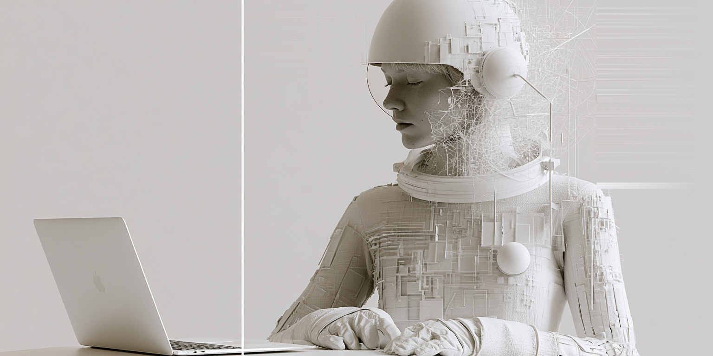

40 Hz binaural beats For when you can't get started · 11 minutes
You'll hear a soft, steady tone. That's it: the 40 Hz beat forms inside your head.
Keep the volume low. Not while driving. If you have epilepsy, a pacemaker or a cochlear implant, ask your doctor first.
Two tones in, one 40 Hz beat your brain makes
Each ear gets its own steady tone. Neither ear hears 40 Hz: the beat only exists once your brain puts the two together. At 40 cycles a second it is far too fast to count; you hear a smooth tone.
| 40 Hz · Focus | 10 Hz · Calm | |
|---|---|---|
| Brainwave band | Gamma, about 30–100 Hz | Alpha, 8–13 Hz |
| Tones | 200 Hz left, 240 Hz right | 200 Hz left, 210 Hz right |
| Eyes | Open, on the task | Closed |
| Use it when | You can't get started | Your mind won't slow down |
| Length | 11 minutes, or on loop | 11 minutes |
Three steps, then just the work
-
Headphones on, volume low
Each ear has to hear its own tone. Speakers blend the two, so the beat never forms. Quiet is enough; the effect comes from the difference between the tones, not the loudness.
-
Press play a minute or two before you start
Open the one task you are avoiding. In the research, starting the beat before the task worked better than starting it during the task.
-
Work, eyes open, for 11 minutes
Do the task, not the timer. Stop at any point. For a longer block, switch on Loop and the session repeats.
Run your own test
- Day one: 11 minutes on a task, with the beat.
- Day two: the same kind of task, same hour, 11 minutes without it.
- Both days, count one thing: how many times you switched tabs or picked up your phone.
Two days won't prove anything, but your own numbers tell you more about you than any headline, including ours.

Not a smart drug.
A metronome.
-
Small lab studies · promising
Two studies: sharper attention while the beat played
In one study, 36 healthy adults heard either a 40 Hz binaural beat or a plain 340 Hz tone for 3 minutes before and during a visual task. Attention in the beat group was more narrowly focused.1 In another, 24 students did a reaction task for 5 minutes each with a 40 Hz binaural beat, with the same tones mixed in both ears, and with pink noise. With the binaural beat they made fewer errors, but they were not faster.2
-
Depends on the listener · 24 students
The same beat doesn't suit everyone
In a study on creativity, 10 Hz and 40 Hz beats both changed one kind of creative thinking. But people with a high natural blink rate, a rough marker of dopamine in the brain, were unaffected or did worse with either beat.3
-
Review · 22 studies
Across 22 studies, a medium effect with big caveats
A 2019 meta-analysis pooled 22 studies on memory, attention, anxiety and pain and found a medium average effect. The size and direction depended on the beat frequency, how long people listened, and when: listening before the task worked better than listening only during it.4 That is why step two says to press play first.
-
Review · 14 EEG studies · mixed
Does the brain actually lock on to 40 Hz? Unclear.
A 2023 systematic review found 5 brain-recording (EEG) studies consistent with binaural beats pulling brainwaves toward the beat, 8 that contradicted it, and 1 mixed.5 The 24-student study above saw fewer errors but no clear rise in 40 Hz brain activity.2 If the beat helps, it may not be by tuning your brain to it.
-
Mice · a different sound
The famous 40 Hz research used a different stimulus
At MIT, light flickering 40 times a second reduced amyloid, a protein linked to Alzheimer’s disease, in mice.6 A later study used a tone clicking on and off 40 times a second, an hour a day for a week: the mice remembered better and had less amyloid.7 Those stimuli pulse in the air. A binaural beat does not; it forms inside your head. Human trials of 40 Hz light-and-sound devices are still running, and this session makes no claims about that work.
-
Retracted · not used here
One 40 Hz study you may see quoted elsewhere
A 2017 study on 40 Hz binaural beats and how the brain links visual features was retracted by its journal in 2021. It is not used as evidence on this page. Details are in the sources.
Research findings, not medical claims. Nothing here treats or prevents any condition. Read the safety notes. For the brain rhythm itself, see what gamma waves are.
Before you press play
What are 40 Hz binaural beats?
Do 40 Hz binaural beats help you focus?
Is this the same as the MIT 40 Hz Alzheimer’s research?
40 Hz or 10 Hz: which should I use?
Can I listen on speakers?
Can 40 Hz binaural beats help with ADHD?
What should I feel?
Two hours of 40 Hz, on YouTube
The same 200/240 Hz tones over a soft brown-noise bed, for a long stretch of study or deep work. No music, no voice. In the YouTube app it keeps playing with the screen off.
Why 11 minutes
Eleven minutes is a design choice, not a number from research. The lab studies played the beat for 3 to 5 minutes before or during a task,12 and the 2019 review found that starting before the task and listening longer tended to help.4 Eleven minutes is a short run-up and a real start. For a longer block, there is Loop.
Sources 7 studies and reviews
- Colzato LS, Barone H, Sellaro R, Hommel B. More attentional focusing through binaural beats: evidence from the global–local task. Psychological Research 2017;81(1):271–277. doi.org/10.1007/s00426-015-0727-0
- Engelbregt H, Barmentlo M, Keeser D, Pogarell O, Deijen JB. Effects of binaural and monaural beat stimulation on attention and EEG. Experimental Brain Research 2021;239(9):2781–2791. doi.org/10.1007/s00221-021-06155-z
- Reedijk SA, Bolders A, Hommel B. The impact of binaural beats on creativity. Frontiers in Human Neuroscience 2013;7:786. doi.org/10.3389/fnhum.2013.00786
- Garcia-Argibay M, Santed MA, Reales JM. Efficacy of binaural auditory beats in cognition, anxiety, and pain perception: a meta-analysis. Psychological Research 2019;83(2):357–372. doi.org/10.1007/s00426-018-1066-8
- Ingendoh RM, Posny ES, Heine A. Binaural beats to entrain the brain? A systematic review of the effects of binaural beat stimulation on brain oscillatory activity, and the implications for psychological research and intervention. PLOS ONE 2023;18(5):e0286023. doi.org/10.1371/journal.pone.0286023
- Iaccarino HF, Singer AC, Martorell AJ, et al. Gamma frequency entrainment attenuates amyloid load and modifies microglia. Nature 2016;540(7632):230–235. doi.org/10.1038/nature20587
- Martorell AJ, Paulson AL, Suk HJ, et al. Multi-sensory gamma stimulation ameliorates Alzheimer’s-associated pathology and improves cognition. Cell 2019;177(2):256–271. doi.org/10.1016/j.cell.2019.02.014
Retracted and not used as evidence: Colzato LS, Steenbergen L, Sellaro R. The effect of gamma-enhancing binaural beats on the control of feature bindings. Experimental Brain Research 2017;235:2125–2131 (doi). Retraction note: Experimental Brain Research 2021;239:363 (doi).
ECHO.11 is a self-care tool, not a medical device, and nothing here is medical advice. Do not listen while driving. If you have epilepsy or a seizure disorder, or you are fitted with a pacemaker or a cochlear implant, check with your doctor before using audio entrainment of any kind. This is not a crisis service: if you are in danger or thinking about harming yourself, contact your local emergency number or a crisis line right away.
Read the full disclaimer
The 40 Hz session is not a diagnosis, a treatment, or a substitute for care from a doctor, therapist, or psychiatrist. If attention, anxiety, or sleep problems are disrupting your life, please talk to someone qualified. This can sit alongside that work; it does not replace it.
Response varies from person to person, and some people notice nothing at all. That is a normal outcome, not a failure on your part.
A few practical limits. Do not listen while driving or operating machinery: this session is built for a fixed task at a desk. Keep the volume low; the effect comes from the difference between the tones, not the loudness. If a session leaves you dizzy, disoriented, or more agitated than when you started, stop and take the headphones off.
The research on this page is drawn from published work on binaural beats and 40 Hz stimulation. It reports what studies observed in general, not what will happen to you, and no efficacy figures are claimed for this specific recording.